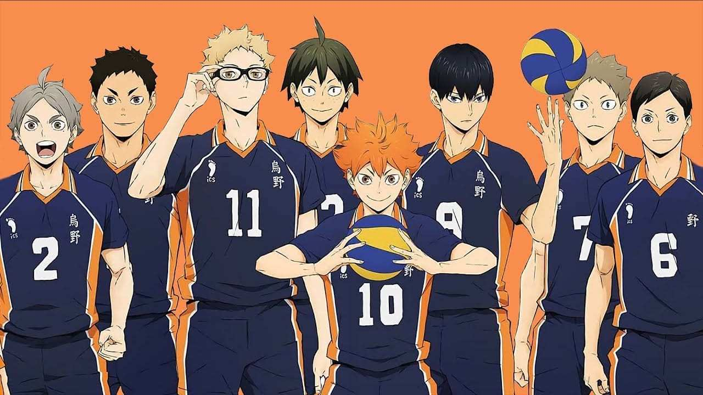
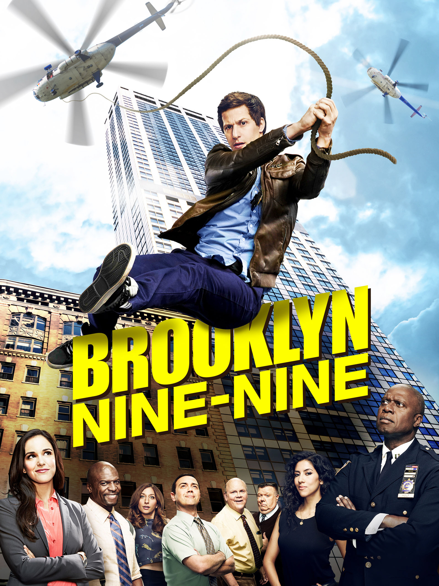

My Favourite Shows
Shown here is my taste in shows. I don't really like or stick to a specific genre of shows, I just watch whatever interests me. Recently, I've watched some anime
after a reccomendation from a friend. I thought I wouldn't really like it but it was surprisingly good. Other than that mostly everything else that I've watched
was english. Below you'll see two of my favorites of these shows. These shows are in no specific order, they are just some of the best ones I've watched as of yet.
Clicking on the images will take you to a Wikipedia page with more information about these shows.
Haikyu!!
- Reccomended to me by a friend
- Anime about volleyball
- Great animation
- Good balance of funny and serious
- Was a lot more than I expected (I never really enjoyed volleyball)
- The show is still ongoing
- The show is in Japanese but there are subtitles
- There is an English version but it's not as far as the Japanese version


Brooklyn Nine-Nine
- Show about a group of detectives
- A comedy
- Great actors
- Really funny show
- Lots of episodes (7 seasons with about 20 episodes per season)
- The show is still ongoing
- It's funny but not goofy
- Even though the main focus of this show is comedy, there are still elements of mystery. The solution to their cases is usually pretty interesting.